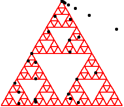
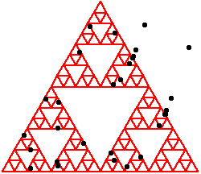

|  |  |
| 2. (iv) Not al all: here are two examples. | |||
| |||
| On the left, the first 10 points are generated by applications of T3; on the right the first 10 points are generated by alternating T3 and T2. | |||
| In fact, we can construct arbitrarily long sequences of Pi that do not enter the equliateral triangle. | |||
| However, once some Pi does enter the triangle, the analysis of parts (ii) and (iii) can be applied. |
Return to Exercises.